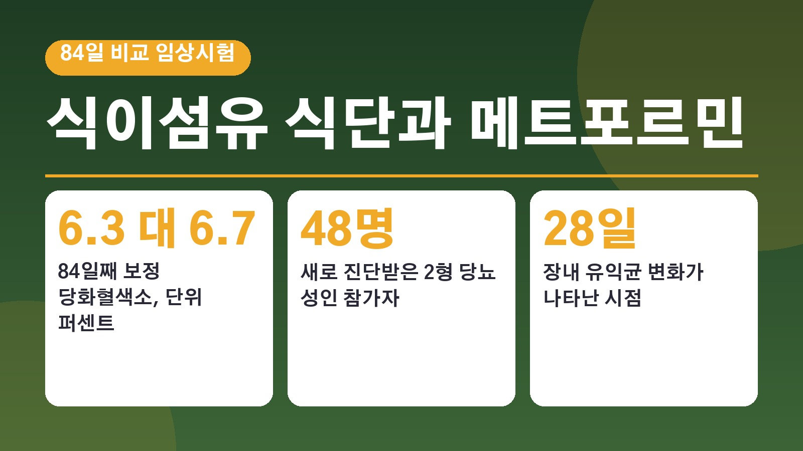
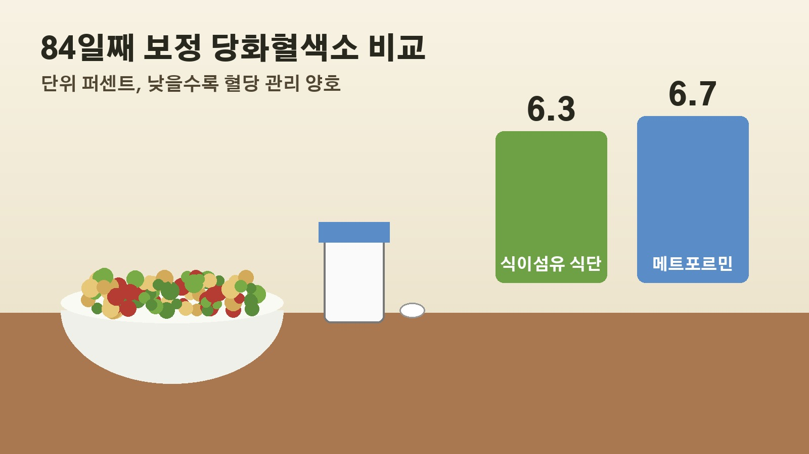

식이섬유 식단이 메트포르민보다 혈당을 더 낮췄다는 84일 연구, 48명 시험에서 확인된 것과 아직 모르는 것

당뇨 진단을 받고 약을 먹어야 할지, 식단부터 바꿔 볼지 고민해 보신 분들이라면 요즘 화제가 된 연구 소식이 눈에 띄셨을 거예요. 식이섬유가 풍부한 식단이 대표적인 당뇨약 메트포르민보다 혈당과 체중을 더 잘 낮췄다는 내용인데요. 실제로 어떤 사람들을 대상으로 무엇을 비교했는지, 숫자는 얼마나 차이가 났는지, 그리고 이 결과를 어디까지 믿어도 되는지 차례로 정리해 볼게요.
어떤 연구였나, 새로 진단받은 2형 당뇨 48명
이번 연구는 중국 상하이교통대와 허난성인민병원 연구진이 허난성인민병원 한 곳에서 진행한 임상시험이에요. 결과는 10월 2일 국제학술지 프런티어스 인 마이크로바이올로지에 실렸습니다.
참가자는 2형 당뇨를 새로 진단받았고 과체중이나 비만인 18세에서 70세 성인 48명이었어요. 당화혈색소가 6.5퍼센트 이상 9.0퍼센트 미만이고 체질량지수가 24 이상인 사람만 참여할 수 있었습니다. 2주간 준비 기간을 거친 뒤 무작위로 나눠 36명은 혈당강하제 없이 식이섬유 식단만, 12명은 메트포르민만 84일 동안 복용했어요. 끝까지 마친 사람은 46명이었습니다.
식이섬유 식단으로 실제 먹은 것
식단 쪽 참가자들은 그냥 채소를 많이 먹은 게 아니었어요. 밀과 귀리, 보리에서 뽑은 식이섬유와 이눌린, 저항성 덱스트린처럼 물에 녹는 섬유와 녹지 않는 섬유가 함께 든 제품을 받았고, 여기에 채소와 콩류, 버섯, 과일을 챙겨 먹도록 식사 지도도 함께 받았습니다.
이 부분이 중요한 이유는 결과를 우리 식탁에 그대로 옮기기 어렵기 때문이에요. 연구에 참여하지 않은 영양사 모니크 리처드도 이번 식단에는 처방된 섬유 제품과 식사 지도가 포함돼 있었다며, 평소 식습관에서도 같은 결과가 나올지는 더 크고 긴 연구가 필요하다고 짚었어요.
84일 뒤 숫자로 본 차이
84일째 처음 수치를 감안해 보정한 당화혈색소는 식이섬유 식단 쪽이 6.3퍼센트, 메트포르민 쪽이 6.7퍼센트였어요. 당화혈색소는 최근 2에서 3개월 동안의 평균 혈당을 보여 주는 지표라서 당뇨 관리 상태를 판단할 때 가장 많이 쓰입니다. 같은 방식으로 보정한 체질량지수도 식이섬유 쪽이 28.4, 메트포르민 쪽이 30.2로 더 낮았어요.
연속 혈당 측정에서는 식이섬유 쪽의 혈당 오르내림 폭이 더 작았고, 84일째 몸 전체 체지방량과 중성지방 수치도 더 낮게 나왔습니다. 다만 식이섬유 쪽 참가자들은 시험 기간에 섭취한 열량 자체가 더 적었는데, 이것이 체중 관련 결과에 영향을 줬을 수 있다는 점도 함께 보고됐어요.

28일 만에 달라진 장내 미생물
연구진이 특히 주목한 건 장 속 세균이에요. 식이섬유 식단을 한 참가자들은 28일 만에 비피도박테리움과 락토바실루스 같은 유익균이 늘고, 만성 염증과 관련된 빌로필라 와즈워시아라는 세균은 줄었어요. 반면 메트포르민 쪽은 84일 동안 장내 미생물 전체 구성에 뚜렷한 변화가 보이지 않았습니다.
식이섬유 쪽에서는 아세트산을 만드는 기능이 늘고 황화수소를 만드는 기능은 줄었어요. 대변 속 아세트산이 늘어난 참가자 34명 중 25명은 28일째와 56일째 당화혈색소가 더 크게 떨어졌다고 해요. 연구진은 식이섬유가 장내 미생물의 구성과 활동을 바꿔 혈당 조절과 체중 감소를 도왔을 가능성이 있다고 설명했지만, 이 경로가 실제 원인인지는 이번 연구로 직접 확인하지 못했습니다.
약을 끊어도 된다는 뜻은 아니에요
결과만 보면 식단이 약보다 낫다는 말처럼 들리지만, 연구 설계의 한계가 분명해요. 참가자가 48명으로 적고, 메트포르민을 먹은 사람은 12명뿐이었어요. 병원 한 곳에서 84일 동안만 진행됐고, 참가자와 연구진 모두 누가 어떤 치료를 받는지 아는 공개 방식이었습니다. 그래서 오래 지속해도 같은 효과가 나는지는 아직 모릅니다.
리처드는 식이섬유가 당뇨 관리에서 훨씬 더 큰 자리를 차지해야 하지만, 처방받은 약을 대신하는 것이 아니라 함께 가는 치료의 한 부분으로 봐야 한다고 강조했어요. 음식과 약은 서로 경쟁하는 방법이 아니라는 거죠.
식이섬유를 늘리고 싶은 분들에게 리처드가 제안한 방법은 이래요. 콩과 렌틸콩, 완두를 식탁에 자주 올리고, 주스보다 통과일을 먹고, 흰 곡물 대신 귀리나 보리 같은 통곡물로 바꾸고, 채소와 견과류, 씨앗을 평소 음식에 더하는 식이에요. 비싼 분말이나 특별한 제품이 꼭 필요한 건 아니고, 갑자기 많이 늘리면 가스가 차거나 더부룩할 수 있으니 천천히 늘리면서 물을 충분히 마시라고 했어요.
정리하면 이번 연구는 식이섬유 식단이 84일 동안 혈당과 체중을 메트포르민보다 더 낮췄다는 흥미로운 결과를 보여 줬지만, 작은 규모와 짧은 기간 때문에 약을 끊어도 된다는 근거로 쓰기는 어렵다는 이야기예요. 지금 약을 드시고 있다면 식단은 약과 함께 챙기는 쪽으로 보시는 게 연구에 참여하지 않은 전문가들의 해석과도 맞습니다.
참고한 기사: 와이드스포츠 식이섬유 식단, 당뇨병 치료제보다 혈당과 체중 관리 효과 높아 2026년 10월 18일, 메디컬뉴스투데이 고섬유질 식단과 메트포르민 비교 2026년 10월 18일, 뉴스메디컬 고섬유질 식단 임상시험 2026년 10월 7일
태그
식이섬유 식이섬유식단 메트포르민 제2형당뇨 당화혈색소 혈당관리 체중관리 장내미생물 통곡물 당뇨식단